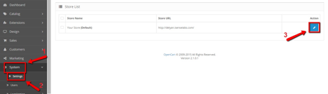
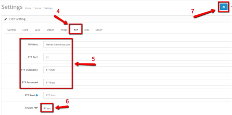
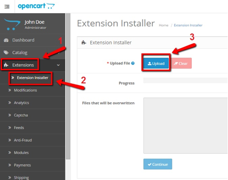
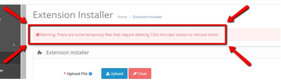
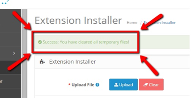

OpenCart 2 introduced a new "Extension Installer" feature. By means of the Extension Installer you can upload zip-packed extensions as well as single modification files by just a few clicks. In order to use the Installer you need to be aware of your FTP credentials.
In order to set your FTP credentials, navigate to System -> Settings -> Store Settings.

Then, choose the FTP tab and fill in your FTP credentials. Make sure you check the Yes radio button for the Enable FTP field and click the blue Save button in the upper right corner of the page as shown:

Now the Extension Installer will know how to access your FTP and you will be able to install extensions with ease.
Usually OpenCart 2.x extensions come packed in a zip, which contains installation and/or update instructions, sometimes a release log and another zip, whose name ends in ".ocmod.zip". Extension Installer recognizes such zips and uploads their content directly to the FTP root of your store. That said, it will produce an error if you try to upload zips with a name that is not in the "*.ocmod.zip" format.
In order to upload an extension, navigate to Extensions -> Extension Installer. Then click the blue Upload button and provide the route to your extension' s"*.ocmod.zip" archive.

If the extension that you are installing contains files with names already existent in the current location, you will receive an alert about this in the grey "Files that will be overwritten" box. This means the extension is about to overwrite files that you already have on your site. Here, you can either inspect all of the listed files and make sure no OpenCart core files are to be overwritten, or contact the extension's developer directly. Once you are sure it is safe to proceed, click the blue Continue button. On success, you should get a green "Success: You have installed your extension!" message.
Uploading single .xml modification files is just as easy as installing zip-packed extensions. The difference is only in the route you will provide the Installer with. Modification files' names should end in ".ocmod.xml" when uploaded via the Installer.
At times, an error could restrain the Installer from completely uploading an extension or modification file and cause it to abort the installation midway through. If this happens, the filling color in the Progress field will become red and will stop filling the bar. Right below it, you will get an error of some type. Example:
When this happens, files that had already been uploaded before the error has occurred, will need to be cleared. OpenCart has the red Clear button for that. If you had forgotten to do that, you will also get an alert on the top of the page about this every time you access your Extension Installer.

Upon clicking the Clear button, the alert should be replaced by the following "Success" message:

You should always make sure all temporary files are cleared before uploading an extension or a modification file because at the very least, they will be taking up space on your server.